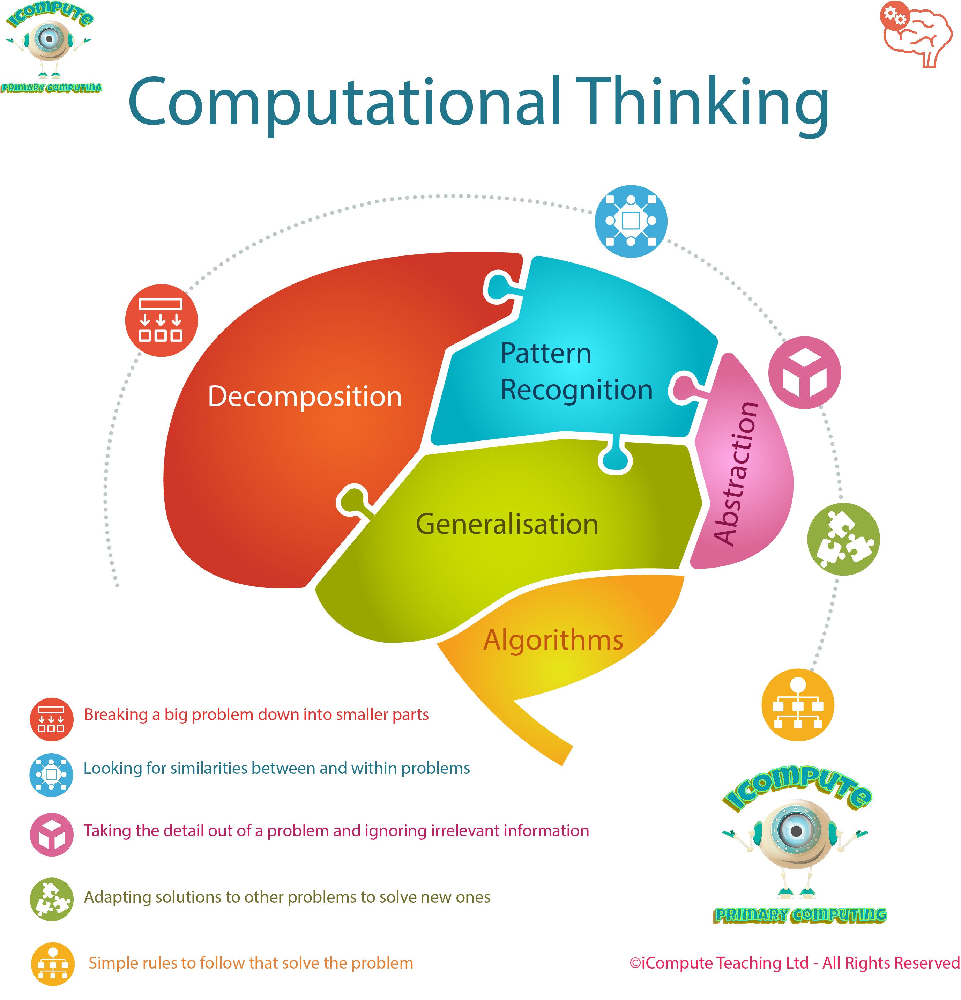

Computional Thinking
Computional thinking involves taking a complicated problem, and understanding what the problem is and developing
all possible solutions to it. These solutions can then be used so that both a human or computer (or both) can understand.
Aspects of Computional Thinking

Decomposition
Decomposition
involves breaking down a complex problem into smaller more manageable parts that are easier to understand.
An Example of this is Brushing Our Teeth:
- Which toothbrush are you going to use
- How long will you brush your teeth for
- What toothpaste will you use
Pattern Recognition
Pattern Recognition involves finding similarities or patterns among
small problems that have already been decomposed in order to solve complex problems more
efficiently. An Example when baking a cake:
- We know each cake will need a precise measurement of specific ingredients
- Each ingredient will go in at a specific time in a certain order
- Each cake will bake for a specific time period
Abstraction
Abstraction is the
process of ignoring the characteristics of problems we don't need, and concentrating on
those that we do (Remove specific details and focus on the general patterns). By doing this we
create an idea for what we are trying to solve. For Example, going back to baking a cake:
- We know that a cake needs ingredients, we don't need to know these ingredients
- We know that each ingredient has a specific measurement, we don't need to know this measurement
- We know that a cake has a specific bake time, we don't need to know this time
Generalisation
Generalisation is a way of solving new problems quickly based on
previous problems that have been solved. We could take an algorithm that solves one problem,
and adapt it to solve similar problems.
Algorithms
An algorithm is a
step-by-step plan/instructions that help you resolve a problem. Each instruction is identified
and the order in which these instructions should be carried out is specified in the plan.
Examples are:
- Tying your shoes
- Following a recipe
- Everyday routines